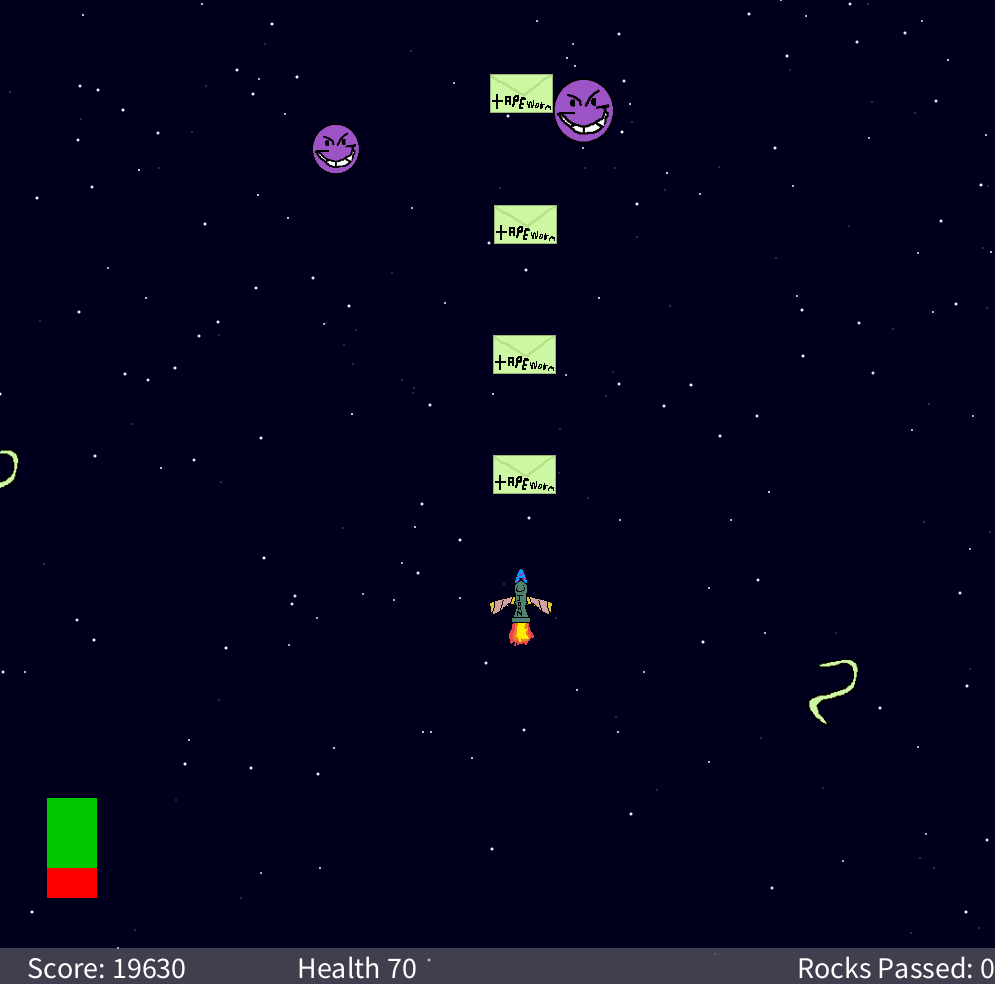
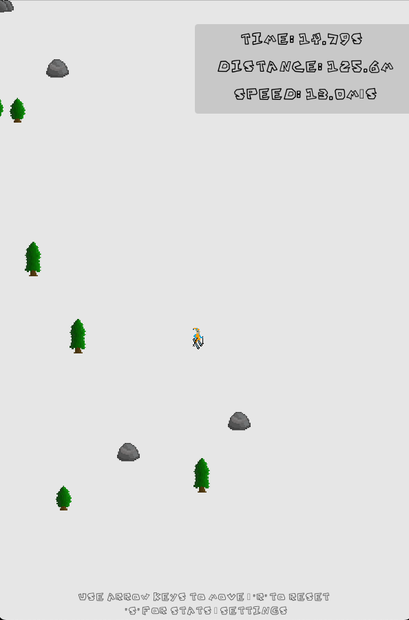
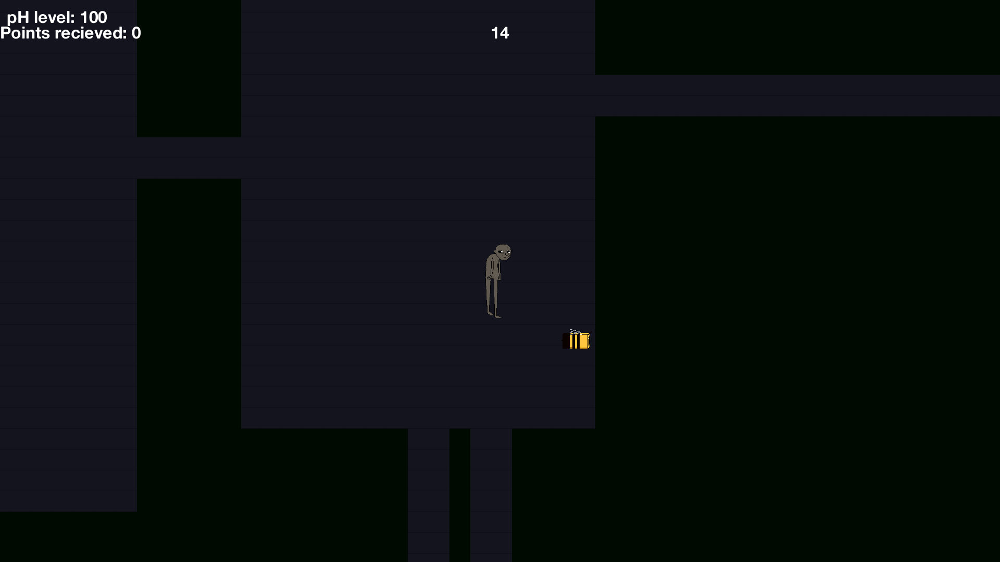

Projects page. Insert projects below

This was my first project. I made it in Quarter 1&2 of my Game Development course. You have to protect earth from the evil tapeworm. This small project was created using Processing Javascript using Object-Oriented Programming to structure and manage in-game entities. Core game elements such as players, enemies, projectiles, or obstacles are kept as classes, allowing for scalable and easily maintainable code.

This was my second project. I made this with 4 others, and honestly was probably my favorite work. It's based off the classic SkiFree game from the 1990s, where you go down slopes escaping the evil yeti. The original was 1991, so I thought it'd be fun to recreate it with today's technology. This was also made in Processing Javascript.

This was the third project that I output. This was made in a group with 3 others. This game turned out very differently from what I had originally planned. With Processing though, some things are more limited than others. It's a top down survival game where you collect items and fight the king's evil goons while you try to escape. Originally it was going to be more strategic in gameplay, but now it's more like a fast-paced action game.
MY NEW PROJECT (In Progress)